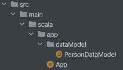
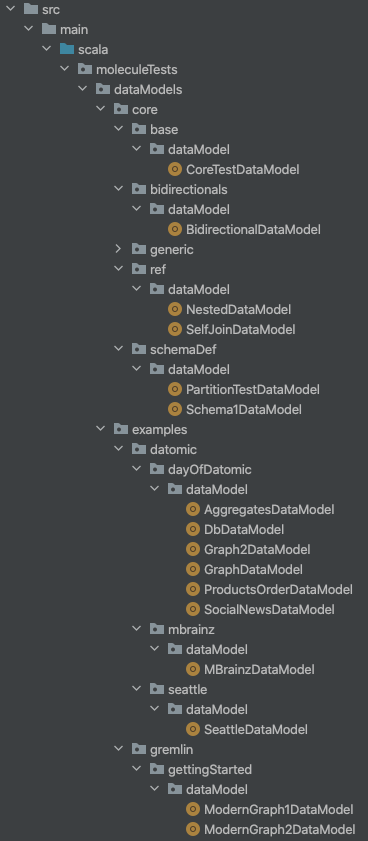
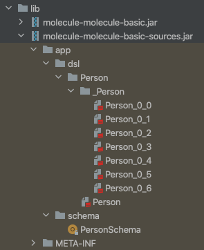

Once you have defined your Data Model, your sbt project needs to be set up to use Molecule.
The sbt MoleculePlugin generates Molecule boilerplate code when you compile your project.
Add the latest version of the plugin in project/buildinfo.sbt:
addSbtPlugin("org.scalamolecule" % "sbt-molecule" % "1.0.0")
And add it to the project build.sbt file
lazy val yourProject = project.in(file("app"))
.enablePlugins(MoleculePlugin)
In ScalaJS projects, enable the plugin in the shared project:
lazy val shared = crossProject(JSPlatform, JVMPlatform)
.crossType(CrossType.Pure)
.in(file("shared"))
.enablePlugins(MoleculePlugin)
These will depend on which specific Datomic database system that you will use. You can choose from 3 different Datomic libraries that will support the following database systems:
| Library | Db system |
|---|---|
| datomic-free | Peer (free) |
| datomic-pro | Peer (pro), Peer Server |
| dev-local | Dev-local/Cloud |
Each of the 3 libraries resolve differently:
.settings(
resolvers ++= Seq(
Resolver.sonatypeRepo("releases"),
"clojars" at "https://clojars.org/repo"
),
libraryDependencies ++= Seq(
"org.scalamolecule" %% "molecule" % "1.0.0",
"com.datomic" % "datomic-free" % "0.9.5697"
)
)
The Starter/pro version of Datomic requires a license so we need to provide a username and password to download the library. We do this by saving those in a secret ~/.sbt/.credentials file:
realm=Datomic Maven Repo
host=my.datomic.com
id=my.datomic.com
user=<your-username>
pass=<your-password>
And then we can resolve the dependencies by giving sbt access to our credentials file:
.settings(
resolvers ++= Seq(
Resolver.sonatypeRepo("releases"),
"clojars" at "https://clojars.org/repo",
"my.datomic.com" at "https://my.datomic.com/repo"
),
credentials += Credentials(Path.userHome / ".sbt" / ".credentials"),
libraryDependencies ++= Seq(
"org.scalamolecule" %% "molecule" % "1.0.0",
"com.datomic" % "datomic-pro" % "1.0.6269"
)
)
The dev-local library is part of Cognitect dev-tools that needs to be downloaded first. After downloading, you ./install the library in your local maven repository and let sbt know to look there too:
.settings(
resolvers ++= Seq(
Resolver.sonatypeRepo("releases"),
"clojars" at "https://clojars.org/repo",
Resolver.mavenLocal
),
libraryDependencies ++= Seq(
"org.scalamolecule" %% "molecule" % "1.0.0",
"com.datomic" % "dev-local" % "0.9.232"
)
)
The MoleculePlugin needs to know where your Data Model(s) are.
You can have a single or several Data Model files in a project, each corresponding to a single database.
Data Model files should reside in directories named dataModel anywhere in your source code. Use the moleculeDataModelPaths sbt settings key of the MoleculePlugin to list paths to those directories.
Say you have a project app like the molecule-basic project project and a single Data Model file PersonDataModel.scala:

Then you simply add the following:
.settings(
moleculeDataModelPaths := Seq("app"),
//...
)
The Molecule project tests shows an example of having multiple Data Model files:

We list these paths like this in our build.sbt:
.settings(
moleculeDataModelPaths := Seq(
"moleculeTests/dataModels/core/base",
"moleculeTests/dataModels/core/bidirectionals",
"moleculeTests/dataModels/core/ref",
"moleculeTests/dataModels/core/schemaDef",
"moleculeTests/dataModels/examples/datomic/dayOfDatomic",
"moleculeTests/dataModels/examples/datomic/mbrainz",
"moleculeTests/dataModels/examples/datomic/seattle",
"moleculeTests/dataModels/examples/gremlin/gettingStarted"
)
)
Apart from the mandatory moleculeDataModelPaths setting key that we saw above, the MoleculePlugin has 3 more optional keys that you can set in your project build file. If the default value suits you, you don’t need to add the key.
moleculePluginActive := false // (default)
Set this to true to have Molecule boilerplate code re-generated on each project compilation.
The default value is false to avoid re-generating boilerplate code when your Data Model hasn’t changed and you simply want to re-compile your project without affecting the existing generated boilerplate code.
A flexible way to control when re-generation should happen is to pass a property value when you want Molecule boilerplate code generated with your project compilation:
sbt clean compile -Dmolecule=true
and then set the key to this boolean value in your project build file:
moleculePluginActive := sys.props.get("molecule") == Some("true")
(You can call the property anything your like)
Then you can freely recompile your project without re-generating the Molecule boilerplate code:
sbt compile
Normally you want generated Molecule boilerplate code available as an immutable jar:
moleculeMakeJars := true // (default)
If you want to be able to modify or test things with the generated boilerplate code, you can set the key to false:
moleculeMakeJars := false
Then the jars are not created and the generated source code available in the src_managed directory in target.
Generate schema to lower/upper conversions. This is only need when importing databases from the Clojure world. Defaults to false.
moleculeSchemaConversions := false // (default)
This is a Datomic-specific sbt settings key that tells whether schema attributes should all be indexed:
moleculeAllIndexed := true // (default)
If you set it to false, your settings in your Data Model determines which attributes are indexed.
Putting all the configuration together, we here have a minimal project build.sbt setup for a free Datomic Peer system on the jvm platform:
import sbt.Keys._
lazy val `molecule-basic` = project.in(file("."))
.enablePlugins(MoleculePlugin)
.settings(
name := "molecule-datomic-peer-free",
scalaVersion := "2.13.7",
resolvers ++= Seq(
Resolver.sonatypeRepo("releases"),
"clojars" at "https://clojars.org/repo",
)
libraryDependencies ++= Seq(
"org.scalamolecule" %% "molecule" % "1.0.0",
"com.datomic" % "datomic-free" % "0.9.5697"
),
// path to domain model directory
moleculeDataModelPaths := Seq("app"),
// Generate Molecule boilerplate code with `sbt clean compile -Dmolecule=true`
moleculePluginActive := sys.props.get("molecule") == Some("true"),
// Generate lover/upper schema conversion files (default is false)
moleculeSchemaConversions := true,
// Let IDE detect created jars in unmanaged lib directory
exportJars := true
)
We have added the last line exportJars := true also to let your IDE automatically detect and include the jars that the MoleculePlugin creates in the unmanaged lib directory of your project.
In the side menu you can see more examples of various project/database setups.
When you have copnfigured your sbt project, you can compile it to have Molecule boilerplate code generated:
sbt clean compile -Dmolecule=true
During project compilation, a series of operations are then performed:
jars in the lib directory.In our basic sample projects these two jars are created:

dsl contains the generated Molecule boilerplate code for the defined Person Data Model and schema contains boilerplate code for transacting our Datomic schema. The name of each jar (one for compiled classes, one for source code) has “molecule-” prepended to your project name to avoid name clashes in lib.
Whenever you make changes to your Data Model, you can simply sbt compile -Dmolecule=true and have your Schema transaction boilerplate code re-generated with your latest changes.